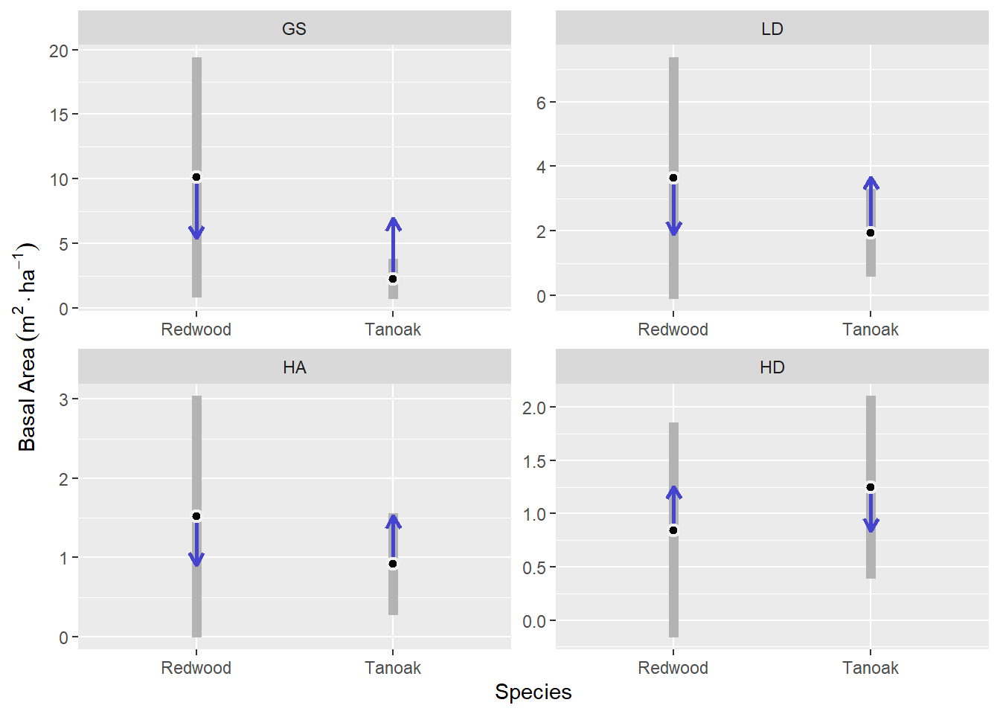
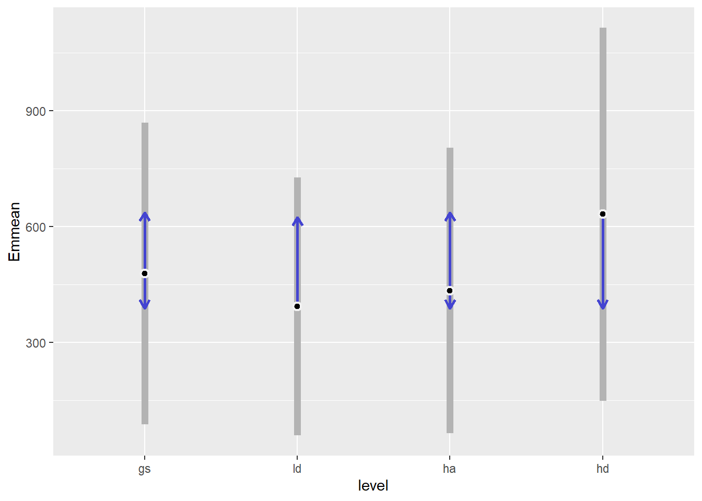
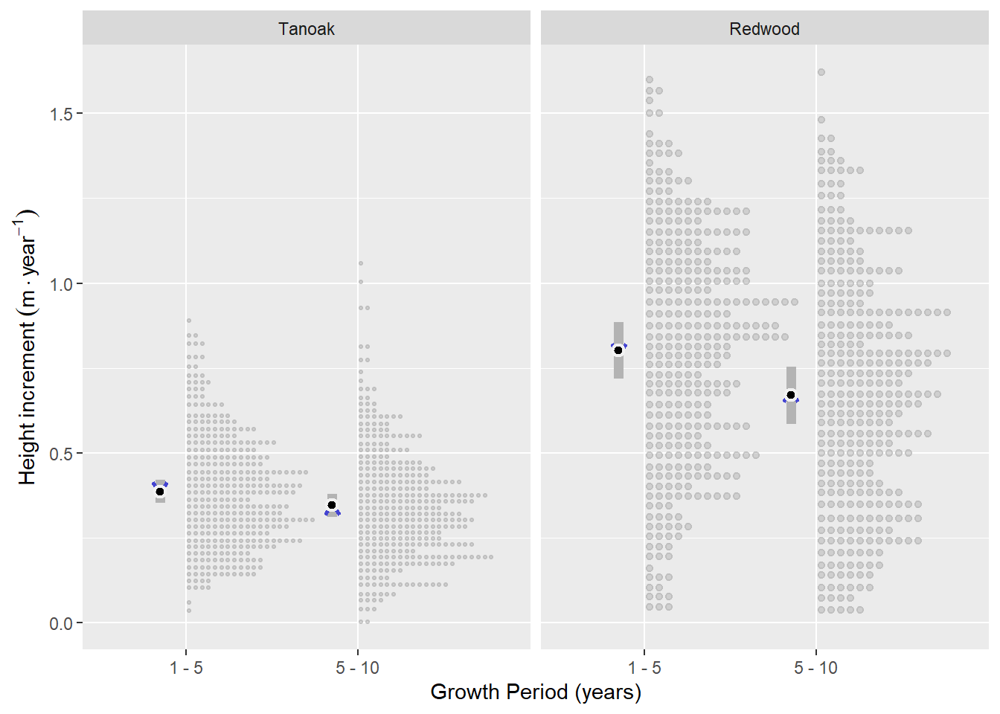
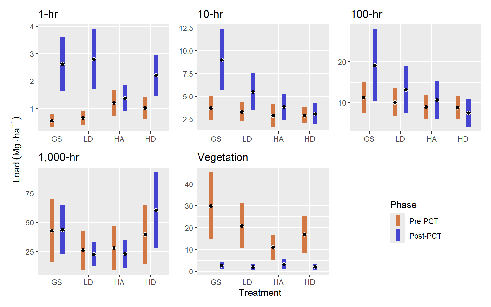

Family: Gamma (log)
Conditional: ba_ha ~ treat * spp + (1 | site/treat)
Dispersion: ~spp (log)
Hurdle: ~spp (logit) 3 Results
TODO: I’ve provided all the comparison results, most of which are not statistically significant. Maybe I should also provide grand mean, summary results.
3.1 Regeneration composition
3.1.1 Basal area
Composition of regeneration in terms of total basal area of each species was modeled as a gamma distribution with a log link with fixed effects for treatment, species, and their interaction and random effects for sites and macro-plots. Dispersion was modeled separately as a function of species, using a log link and the rate of zeros was modeled using the logit link, for each species (Listing 3.1).
According to this model, we would expect five times as much basal area of other species in LD compared to HA (p = 0.034), and six times more other species basal area in HD compared to HA (p = 0.014), but the presence of other species was generally less than 0.75 m2 ha-1.
We expect 5 times more redwood regeneration basal area in the GS treatment compared to HA (p = 0.03), and 7 times compared to HD (p = 0.02).
For tanoak, we expect about twice as much regeneration basal area in the GS treatment compared to HA (p = 0.03).

Figure 3.2 shows the same model as Figure 3.1, but with an emphasis on treatment comparisons between redwood and tanoak. This shows that we expect on average, five times greater redwood basal area than tanoak basal area in the GS treatment (p < 0.001), and about 2.7 times in the LD treatment (p = 0.039). The two species were most similar in the HD treatment, where redwood basal area is expected to be 1.4 times that of tanoak (p = 0.56). Redwood variability, indicated by the size of 95% confidence intervals, is much greater than that of tanoak’s across treatments, and redwood variability was greater in GS and LD treatments than in the HA and HD treatments (Figure 3.1).

3.1.2 Other species
Other speceis included grand fir, madrone, and California wax-myrtle, of which there was a total of 23, 28, and 16 observations across our 16 macro plots (comprising 64 tree density plots). Generally, each plot had between 0 and 9 observations of other species, except for one macro plot with the LD treatment, which had 16 observations (data not shown).
3.1.3 Douglas-fir counts
Counts of regenerating Douglas-fir seedlings per vegetation plot (n = 16) were analyzed for differences between harvest treatments using a negative binomial response with a log link, fixed effects for treatment, random effects for site and macro-plot (Listing 3.2).
Family: nbinom1 (log)
Conditional: n ~ treat + (1 | site/treat) This model for Douglas-fir counts does not result in any statistically significant differences between treatments. Generally, we expect about 2 seedlings per 4-meter-radius plot, or about 413 seedlings per hectare (Figure 3.3).

3.2 Sprout heights
3.2.1 Height increment
The selected height increment model used a normal response distribution on the identity link. It included treatment, growth period, species, and the interaction of species and growth period as fixed effects. A random intercept was included for tree (multiple observations) and macro-plot, and a random slope was included for species. The dispersion parameter for the response was modeled (with a log link) as a function of treatment, growth period, species and all three-way interactions (Listing 3.3).
Family: gaussian (identity)
Conditional: ht_inc ~ treat + year * spp + (1 | tree) + (0 + spp | plot)
Dispersion: ~spp * year * treat (log) The model selected based on AIC lacks a treatment x species interaction, suggesting that there is not evidence that treatments affected species differentially. It also lacks a treatment x year interaction. This means that there was not enough evidence to support that treatment was related to changes in growth rate.
The presence of treatment in the model (0.001 ≤ p < 0.03) suggests that the levels of treatment were associated with different growth rates across species and years. And the species x year interaction (p < 0.001) suggests changes in growth rates are different for redwood and tanoak (Figure 3.4).
Averaging over growth periods, treatment specific height increments for redwood ranged from 0.66 to 0.86 m yr-1, and for tanoak, from 0.29 to 0.49, with the slowest growth in the HD treatment and the fastest in the GS treatment. Height increment was greater in the GS treatment than the HA and HD treatments by about 0.19 m yr-1 (p < 0.001). The LD treatment was intermediate, but not statistically distinguishable from the other treatments (0.13 < p < 0.28).

Redwood growth slowed from 0.80 to 0.67 m yr-1 in the second period and tanoak slowed from 0.39 to 0.34 m yr-1.
Redwood grew faster than tanoak, but slowed down more relative to it in the second period. Height increment for redwood was 0.42 m yr-1 greater in the first period and 0.33 m yr-1 greater in the second period than tanoak height increment (Figure 3.5).

3.2.2 Height at year 10
Sprout heights at year 10 were modeled with a normal response and a log link. The best model included species and treatment, but no interactions in the fixed effects. This suggests that treatments do not affect species differentially. It also included a model for dispersion (log link) that had species, treatment, and their interaction as predictors (Listing 3.4).
Family: gaussian (log)
Conditional: ht ~ treat + spp + (0 + spp | plot)
Dispersion: ~spp * treat (log) Because the best model did not contain a species x treatment interaction, comparisons between treatments is the same for both species. The GS treatment resulted in greater heights in year 10 than the other treatments (0.001 < p < 0.04). Predicted mean height for redwood ranged from 10.29 m in the GS treatment to 6.16 m in the HD treatment. For tanoak, predicted mean height ranged from 5.12 in the GS treatment to 3.04 in the HD treatment. Predicted mean heights followed the pattern GS > LD > HA > HD (Figure 3.6).

3.3 Fuels
3.3.1 Pre-pct
Gamma distributed, linear multi-level models, with a log link were used for all six fuel class responses. Random intercepts were specified for three levels of nesting, representing sites, treatment blocks, and transect corners. All models except for the duff & litter model included a hurdle model to account for zero, which was modeled with a logit link. For the 10-hr fuel model, the hurdle portion was modeled as a function of treatment, and for the others, it was modeled as a single rate for all observations. The 10-hr fuel model also included a dispersion model, which was modeled with a log link, using treatment as a predictor (Table 3.1).
| class | Family | Link | Conditional | Dispersion (log) | Hurdle (logit) |
|---|---|---|---|---|---|
| Duff & Litter | Gamma | log | load ~ treatment + (1 | site/treatment/corner) | ~1 | ~0 |
| 1-hr | Gamma | log | load ~ treatment + (1 | site/treatment/corner) | ~1 | ~1 |
| 10-hr | Gamma | log | load ~ treatment + (1 | site/treatment/corner) | ~treatment | ~treatment |
| 100-hr | Gamma | log | load ~ treatment + (1 | site/treatment/corner) | ~1 | ~1 |
| 1,000-hr | Gamma | log | load ~ treatment + (1 | site/treatment/corner) | ~1 | ~1 |
| Vegetation | Gamma | log | load ~ treatment + (1 | site/treatment/corner) | ~1 | ~1 |
For Duff & Litter, the largest difference was between the HD and HA treatments. The HD treatment had about 1.4 times more duff and litter (p = 0.07). Generally, all treatments were similar, with estimated loading of around 50 Mg ha-1. One-hour fuels were around 50% higher in the HA treatment compared to the LD and GS treatments (p = 0.07, and p = 0.01, respectively), with mean differences of around 0.5 Mg ha-1. Ten, hundred and thousand-hour fuels were statistically, very similar across treatments (p = 0.7 — p = 1). Point estimates varied by about 1, 3, and <20 Mg ha-1 for ten, hundred, and thousand-hour fuels, respectively. Vegetative fuel loading was greatest in the GS treatment, with an expected value of 28.5 Mg ha-1, which was about 2.7 times greater than in HA (p = 0.01) (Figure 3.7).

Here are the grand means, pre-PCT for each fuel type:
| class | 1 | response | SE | df | asymp.LCL | asymp.UCL |
|---|---|---|---|---|---|---|
| dufflitter | overall | 46.2706677 | 4.1524064 | Inf | 38.8076665 | 55.168859 |
| onehr | overall | 0.7976222 | 0.1078313 | Inf | 0.6119593 | 1.039614 |
| tenhr | overall | 3.3601573 | 0.2894670 | Inf | 2.8381234 | 3.978212 |
| hundhr | overall | 10.8836851 | 1.1758587 | Inf | 8.8067019 | 13.450507 |
| thoushr | overall | 42.5329141 | 7.4550597 | Inf | 30.1667638 | 59.968275 |
| veg | overall | 17.5463823 | 3.0620652 | Inf | 12.4635619 | 24.702050 |
3.3.2 Post-pct
The response for all six, post-pct fuel classes were modeled with a gamma distribution and a log link, and included the same multi-level random effects as for the pre-pct models. Dispersion models with treatment as the only predictor were included for 1-hr and 100-hr fuel classes. All models included a hurdle portion to model zeros using a logit link. For 100-hr fuels, this model included treatment and site as predictors, and for the rest, a constant rate for all observations was used (Table 3.2).
| class | Family | Link | Conditional | Dispersion (log) | Hurdle (logit) |
|---|---|---|---|---|---|
| 1-hr | Gamma | log | load ~ treatment + (1 | site/treatment/corner) | ~treatment | ~1 |
| 10-hr | Gamma | log | load ~ treatment + (1 | site/treatment/corner) | ~1 | ~1 |
| 100-hr | Gamma | log | load ~ treatment + (1 | site/treatment/corner) | ~treatment | ~treatment + site |
| 1,000-hr | Gamma | log | load ~ treatment + (1 | site/treatment/corner) | ~1 | ~1 |
| Vegetation | Gamma | log | load ~ treatment + (1 | site/treatment/corner) | ~1 | ~1 |
| Vegetation Difference | Gamma | log | load ~ treatment + (1 | site/treatment/corner) | ~1 | ~1 |
Post-pct resulted in greater stratification of treatments (Figure 3.8). One-hour fuels for most treatments were around 2.4 Mg ha-1, but the HA treatment had around half of that amount (p = 0.01 to p = 0.02). The GS treatment had the greatest 10-hr fuel loading with 8.8 Mg ha-1, which was about 1.6, 2.3 and 2.9 times greater than the LD, HA, and HD treatments respectively (p = 0.03, p < 0.001, for the others, respectively). The LD treatment also had about 1.7 times more 10-hr fuels that the HD treatment (5.4 vs. 3 Mg ha-1, p = 0.001). Hundred-hour fuels were also greatest in the GS treatment, with an average of about 19 Mg ha-1, which was about 2.6 times greater than in the HD treatment (7 Mg ha-1, p < 0.001). Thousand-hour fuels were greatest in the HD treatment, with 80 Mg ha-1, which was about 2.7 times greater than the LD and HD treatments (p = 0.03 and p = 0.05, respectively). Fuel loading for live vegetation was similar across treatments at around 2.5 Mg ha-1. The pre-post vegetation difference was greatest in the GS treatment at about 31 Mg ha-1, which was 2.5 and 2.8 times the HD and HA treatments, respectively (p ≈ 0.01).

Here are the grand means post-PCT for each fuel type:
| class | 1 | response | SE | df | asymp.LCL | asymp.UCL |
|---|---|---|---|---|---|---|
| dufflitter | overall | 46.2706677 | 4.1524064 | Inf | 38.8076665 | 55.168859 |
| onehr | overall | 0.7976222 | 0.1078313 | Inf | 0.6119593 | 1.039614 |
| tenhr | overall | 3.3601573 | 0.2894670 | Inf | 2.8381234 | 3.978212 |
| hundhr | overall | 10.8836851 | 1.1758587 | Inf | 8.8067019 | 13.450507 |
| thoushr | overall | 42.5329141 | 7.4550597 | Inf | 30.1667638 | 59.968275 |
| veg | overall | 17.5463823 | 3.0620652 | Inf | 12.4635619 | 24.702050 |
Pre-commercial thinning led to a small increase in average 100-hr fuel loading, only for the GS treatment, increased 10-hr fuels in the GS and LD treatments, and increased 1-hr fuels for all but the HA treatment (Figure 3.9), although these results are not statistically comparable, due to slightly different model structures.
